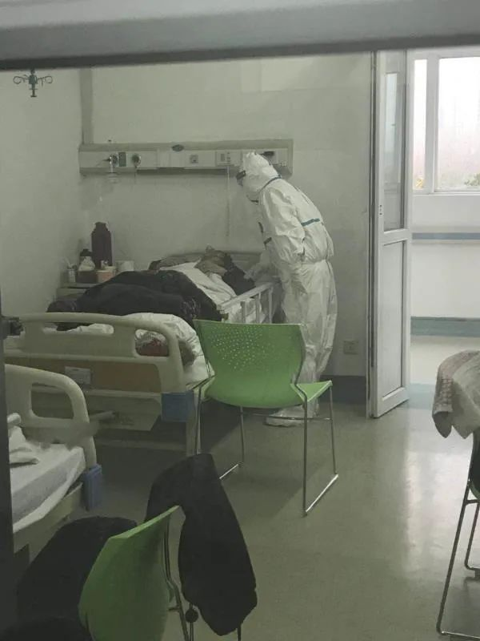
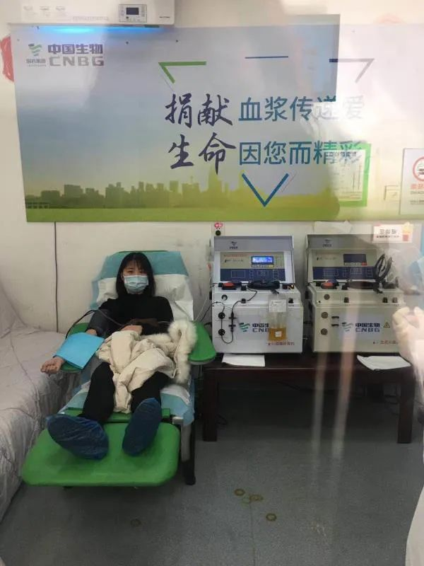
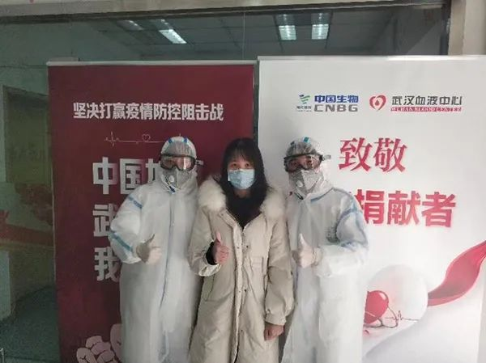

特写|两家公立医院新冠感染溯源 北京救治专家细解防控难题
原文链接 备份链接 【财新网】（记者 赵宁 实习记者 曾美雅）北京大学人民医院一名住院病人感染新冠肺炎的消息传出后，北京疫情防控备受关注。国家主席习近平在2月23日的讲话中，更是将“全力做好北京疫情防控工作”作为了七项重点工作之一。由于医 …
澎湃新闻记者 薛莎莎
“我给领导打电话说要返岗，考虑到我刚康复，领导不愿安排我去隔离病房。我争取后，领导才同意。”武汉市普仁医院呼吸内科护士韩茜茹2月26日向澎湃新闻记者说。
疫情发生后，韩茜茹于1月19日被医院派往金银潭医院支援，随后不幸感染新冠肺炎，治疗8天后康复出院。隔离近半月后，她捐献了300毫升血浆。捐血浆当天，她致电领导要求返岗，次日到普仁医院开辟出的隔离病区，和同事们并肩作战。
支援一线、确诊、治愈、隔离、献血浆、返岗，至今，韩茜茹抗疫已有39天。
其实，得知自己确诊时，韩茜茹也十分担心，但她知道不能表现出来，因为年过五旬的父母会因此更担心更焦虑。住院后，她积极配合治疗，很快康复出院。
经历了医护人员和病人的双层身份，韩茜茹称，作为病友，她想告诉其他病人，心理上不要有太大负担，要积极配合治疗。作为医护人员，她希望病人要相信医护人员一定会尽全力救治，也会尽量满足他们生活上的需求。正值抗疫时期，韩茜茹希望医护人员和病人之间要相互理解相互体谅，共同打赢这场战争。
韩茜茹口述

韩茜茹在金银潭医院护理病人。本文图均为 受访者供图
支援：来到金银潭医院隔离病房
我叫韩茜茹，是普仁医院呼吸内科的护士，工作已经8年了。
疫情发生后，我一直在一线工作，我始终没想过自己会被感染。
1月中上旬，来普仁医院的发热病人越来越多。这些病人多有反复发烧，甚至高烧不退的症状，病人的CT片子也和流感病人不一样。我们让这些病人住进病房单间，隔离起来。
1月18日下午，我接到领导的电话，说医院要选派年资较高的护士去支援金银潭医院，护理确诊的新冠肺炎病人，医院暂定选派三名护士，我是其中之一，要询问我以及我父母的意见，大家都同意才能去。
说不害怕是假的，我确实有点担心，但医院信任我，才决定让我去，所以我决定去支援金银潭医院。我打电话征求父母的意见，电话中，我听得出他们很担心，但他们还是理解支持我。
1月19日上午，我和另外两名同事来到金银潭医院报到。

韩茜茹和同事们在病房
确诊：我什么症状都没有就感染了？
来到金银潭医院，我们进行了各方面事项的培训。
在这里工作的前两天，我实在难以适应。我们穿着防护服，在病房里一待就是四个小时。四个小时不吃不喝不上厕所，我倒还可以忍受，但是防护服太厚了，十分闷热，呼吸不畅，我在病房里头晕头疼，实在难受。同时，我还大把大把出汗，每次从病房出来，身上都被汗水浸透。
金银潭医院的同事们经常处理传染病人，已经很习惯了，护理病人也熟练。他们给了我很多帮助，在这个过程中，我也学到很多护理传染病病人的知识。没过几天，我就慢慢习惯这套防护装备了。
当时，金银潭医院收治的都是各个医院转来的确诊病人，我所在的病区大约住了50多位病人，我和两位同事负责照顾20多位病人。
病人无家属陪护，我们既需要进行采血、输液等医疗护理，也需要照顾病人吃饭、喝水、上厕所等生活护理，工作确实挺重。
护理人手不足，我们有时白班工作八个小时后，还要上夜班，从凌晨1点上到早上8点才下班，处于连轴转的状态。
工作几天后，医院例行安排为医护人员进行核酸检测。次日，我按照排班表，可以在家休息一天。大年初一（1月25日），父母开车送我去医院上班。就在上班途中，我得知我感染了新冠肺炎。
当时，我接到金银潭医院同事打来的电话说我核酸检测呈阳性，让我尽快回医院住院治疗。
我听到这个消息的第一反应是：怎么可能？我什么症状都没有怎么就感染了？我不太相信，但电话那头给出的答案十分肯定。
我很恐慌，但也在不断说服自己接受这个事实。我定晴一想，父母就在身旁，他们都已经50多岁了，我不能表现出担心，要不然他们会更担心更害怕的。父母还考虑我的情绪，反过来安慰我说，“不要紧，积极治疗会好的。”
我回到医院后，又做了一次核酸检测，还是阳性，我就住院了。
随后，父母也分别检查了CT，好在他们肺部都无异样，我没有传染给他们。

韩茜茹献血浆
治愈：积极治疗，八天出院
无论是在普仁医院呼吸内科工作，还是来到金银潭医院支援，我都直接接触确诊病人。所以，我真的不知道自己是在什么时候感染的。
住院后的前几天，我的身体逐渐有了症状，开始食欲不振，我很想吃，但每天吃得仍然很少。
虽然自己心里很害怕，但看到同病房里的其他病人高烧不退，咳嗽不止，我想我的病情应该属于轻症，心里暗自庆幸，幸亏发现得及时，及早治疗。
慢慢地，我的心态也好了些。父母有时打电话问我身体是否有不舒服，我一般不向他们传递负面消息，不想让他们为我担心。
医生给我开了一些抗病毒、抗感染的药。他们都很照顾我。医院院长和其他领导得知我的情况后，还特意来看望慰问我。我都挺感动的。
本来我的病情就不重，加上积极配合治疗，约一周后，我做的核酸检测就已经转阴，我在2月3日出院。
按照规定，我要回家隔离近半个月。在这期间，我住在自己的房间，单独吃饭，度过隔离期。

韩茜茹和血液中心工作人员合影留念
返岗：争取后，领导同意回一线岗
就在隔离期间，我在电视上看到金银潭医院院长呼吁康复的新冠肺炎病人捐献血浆。我就萌生了献血浆的想法。
2月16日，我献了300毫升的血浆。
随后，我就打电话给普仁医院的护理部领导表明了自己想要返回一线岗位的想法。领导听后很犹豫，考虑到我刚康复，领导说回来工作可以，但不能去一线，只能去普通病房，照顾其他病人。
我坚持要返回隔离病房去护理新冠肺炎病人。一方面，我此前就在金银潭医院支援，已经学到了很多这方面的知识和经验。另一方面，我所了解到的，康复的病人好像没有被再次感染的。基于这两点，我认为我去一线工作，风险不大，只要做好防护，应该不会被感染。
我争取后，领导终于同意我去一线。那时，普仁医院刚开辟出第十个隔离病区，用来收治确诊病人，所以我顺理成章的在十病区开始工作。
2月17日，我就进入工作状态了。有了在金银潭医院工作的基础，我在普仁医院的工作上手得更快。
面对病人，我们医护人员总想多鼓励他们。病房里有一位阿姨，一家三口都感染了新冠肺炎，病情都比较重，她老伴已经因此离世。她和儿子住在一间病房里，每天的情绪很消极。有一次，阿姨偷偷问我，“这个病到底能不能治好呀，我们会不会死呀？”我说，“会治好的，不要给自己那么大压力，你看看你现在都可以自己下床、上厕所，还能好好吃些饭菜，已经好转了，要对自己有信心。”后来，这位阿姨心态慢慢变好，身体也在慢慢变好。如今，她和儿子再恢复几天，差不多就能出院了。
这段时间，我从医护人员转变成病人，又从病人转变成医护人员，经历了这两种不同的身份。作为病友，我想告诉那些正在接受治疗的人，一定要保持好心态，积极配合治疗，现在治愈率越来越高，不要过于担心。作为医护人员，我希望病人们能够相信我们一定会尽全力治疗他们，也会尽力满足他们生活上的需求。
当前，疫情防控工作仍然严峻，医护人员每天的工作压力和精神压力都很大，我们看到病人抢救无效离世，也很伤心很无助。特殊时期，我希望医护人员和病人之间要相互理解相互体谅，共同打赢这场战争。
本期编辑 邢潭
推荐阅读


原文链接 备份链接 【财新网】（记者 赵宁 实习记者 曾美雅）北京大学人民医院一名住院病人感染新冠肺炎的消息传出后，北京疫情防控备受关注。国家主席习近平在2月23日的讲话中，更是将“全力做好北京疫情防控工作”作为了七项重点工作之一。由于医 …
原文链接 备份链接 从第一例患者入院，金银潭医院已超负荷运转近两个月。医生、护士、病人、志愿者，都在为新冠病毒不眠不休，昼夜奋争。绝望和希望、晦暗和明朗、苦涩和感动，也交织纵横，罩住整座江城。 全文7410字，阅读约需14分钟 点击下图 …
原文链接 备份链接 后来我回想，也挺后怕的。我接诊阿姨的时候，给她查体，她对着我咳嗽过。 口述 | 宋亚锋 整理 | 黄 祺 “突然听到一个消息，心情很不好，内心很恐惧，虽然根本不认识，但感觉很难过，一路走好，希望你的家人能够渡过难 …
原文链接 备份链接 澎湃新闻记者 黄霁洁 明鹊 朱莹 温潇潇 葛明宁 特约撰稿 张小莲 实习生 张卓 沈青青 陈媛媛 蓝泽齐 住院15天后，2020年2月1日，阳光明媚，湖北黄冈市中心医院的医生黄虎翔准备出院了。他瘦了一些，洗了澡，换了 …
原文链接 备份链接 一座人口过千万的超级大都市在突降灾疫后陷入休克，然后艰难走出混乱无望 财经封面。创意设计/黎立 文 |《财经》特派武汉记者 刘以秦 信娜 王小《财经》记者 房宫一柳 黎诗韵 俞琴 王丽娜 王静仪 陈亮 李斯洋 李皙寅 …